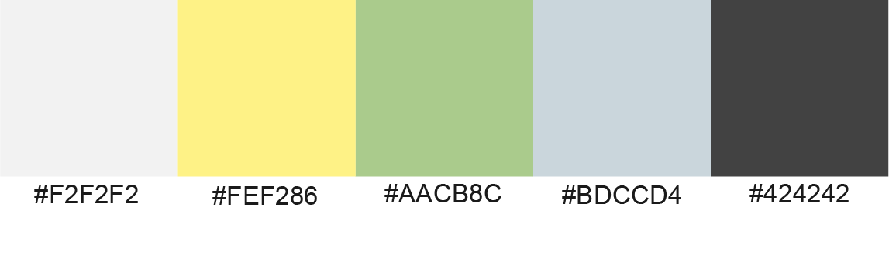
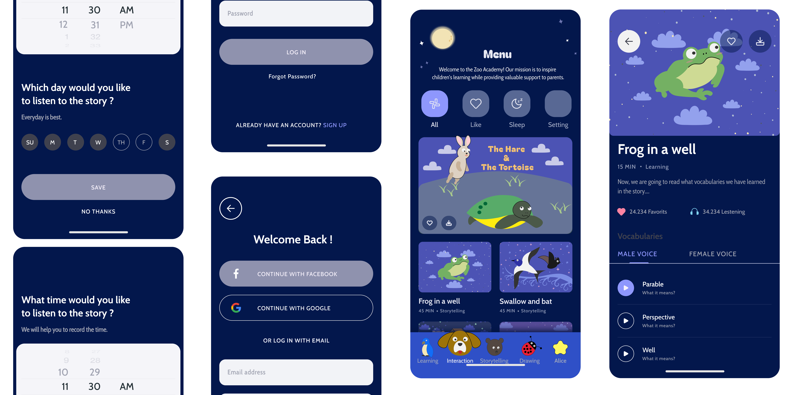

ZOO ACADEMY offers inspiration to children’s learning while providing valuable support to parents.
Professions: User Interface, interaction design, and product design.
Tools: Illustrator, p5.js, Figma.
✦ Incorporating storytelling into interaction design can enhance children's comprehension of an event's origins.
✦ The story's characters add a special charm that captivates children during their formative learning years.
✦ Integrating educational tools for kids into mobile apps empowers parents to provide learning opportunities anytime.
✦ Fostering empathy in children toward the humane treatment of animals: Extending this mindset to empathy for humans.
✦ Apps such as Moshi Kids, CBeebies Little Learners, Bebi: Baby Games for Toddler and others.
✦ It combines storytelling with vocabulary learning, using fables to impart life lessons while expanding kids' language skills.
✦ Engaging with story characters creates an interactive experience that reinforces story retention and boosts entertainment value..
✦ Finger-drawing characters provides an accessible activity for infants, supporting their sensory development.
✦ Since this app is centered around animals and nature, I want to use a lighter color palette featuring shades of yellow, green, and blue. For the dark mode, instead of pure black, I prefer a dark grey tone.
✦ Skia & Lucida Grande showcase the blend of technological precision and hand-drawn charm. Their design harmonizes beautifully with Zoo Academy, capturing a balance of cuteness and educational appeal.
✦ I created a system with the main menu positioned at the bottom of the screen, making it easy for kids to navigate by recognizing the animals. Additionally, it includes a settings button and a volume control for convenience.
✦ Here’s how the Interaction feature appears: users can interact with the screen.
✦ The feedback I received was positive, with kids showing great interest in the animals drawn in crayon style.
✦ Reading and memorizing the vocabulary proved to be highly effective.
✦ The p5.js interaction with the characters was a significant success.